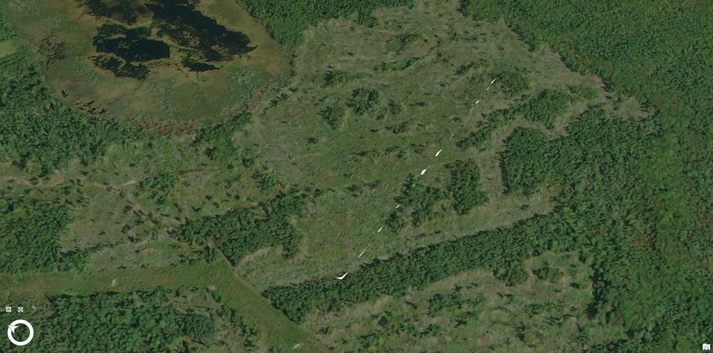
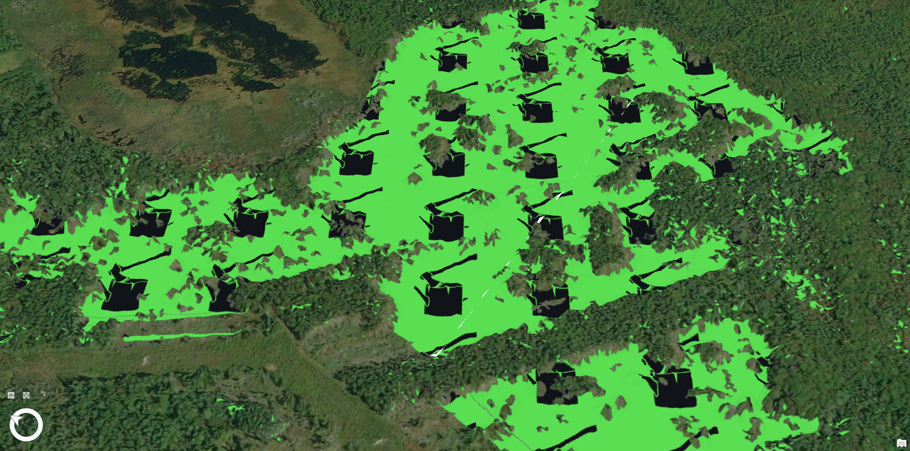
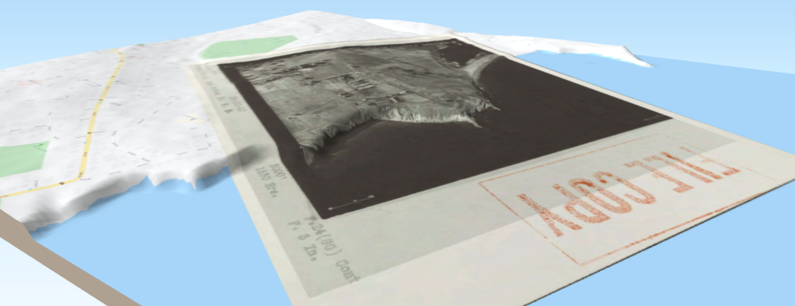

Part 1 – Clearcut Visualization
In this exercise areas which were one through four meter above sea level were highlighted to visualize flooding. Building footprints were extruded to their average height as well to show the impact of the flooding upon them. After the data was downloaded for the study area the DEM rasters were merged in ArcPro. The DEM was then run through the Con tool to create 4 flood rasters, each containing an area that was 1,2,3, and 4 meters above sea level. The next step was to extrude the building footprints. The open street map building data had the footprints of the buildings in the area. These building footprints were extruded to the average height of the building footprint area taken from the CHM. The scene was then set changed to a 3D local scene, the four flood interval rasters were then overlaid with the buildings, exported to images and then compiled into the animated GIF you see here. Crossfading between the rasters was done to give a smoother flood like visualization. Data sources: Open Street Map (Buildings), Nova Scotia Elevation Explorer (DEM), Sentinel Satellite Imagery (Terrain overlay
 Data sources: Nova Scotia Elevation Explorer (DEM, DSM), ESRI Satellite Imagery (Basemap)
Part 2: Flood Visualization
In this exercise areas which were one through four meter above sea level were highlighted to visualize flooding. Building footprints were extruded to their average height as well to show the impact of the flooding upon them. After the data was downloaded for the study area the DEM rasters were merged in ArcPro. The DEM was then run through the Con tool to create 4 flood rasters, each containing an area that was 1,2,3, and 4 meters above sea level. The next step was to extrude the building footprints. The open street map building data had the footprints of the buildings in the area. These building footprints were extruded to the average height of the building footprint area taken from the CHM. The scene was then set changed to a 3D local scene, the four flood interval rasters were then overlaid with the buildings, exported to images and then compiled into the animated GIF you see here. Crossfading between the rasters was done to give a smoother flood like visualization.

Data sources: Open Street Map (Buildings), Nova Scotia Elevation Explorer (DEM), Sentinel Satellite Imagery (Terrain overlay)
Part 3: Wind Farm Visualization
In this part a wind farm was visualized in Cheticamp, Nova Scotia. Cheticamp is infamous for its high wind speeds and the weather station there has recorded wind speeds of over 200 km/hour on several occasions. The area is also one of the most populated in northern Cape Breton. All in all it is an ideal site for a wind farm. To create this visualization the DEM was added and used as the elevation source for the 3D scene. The 3D wind turbine models were then added to the map and set to the proper height and width dimensions. Once the terrain and models were set up in a 3D scene a series of key frames were added that were smoothly transitioned by ArcPro’s map tool. The exported video can be seen below.
Data sources: Nova Scotia Elevation Explorer (DEM), clara.io (Wind Turbine model), ESRI (basemap)
Part 4: Atlantic Memory Park Historic Photo Visualization
In this example a park was rendered in the browser using threejs. The elevation data was downloaded from the Nova Scotia Elevation Explorer website and then the sequential tiles for the study area were merged with the Mosaic to New Raster tool. The park concept art was then imported and georeferenced to position it correctly. The merged DEM and the georeferenced park image were then added in QGIS and exported as a 3D scene using the qgis2threejs plugin. The vertical exaggeration was set to 1.5 to more effectively visualize the terrain. The exported 3D render can be viewed in the browser by clicking the link below.
 LinkData sources: Nova Scotia Elevation Explorer (DEM), Dillon Consulting (Park Concept Drawing)